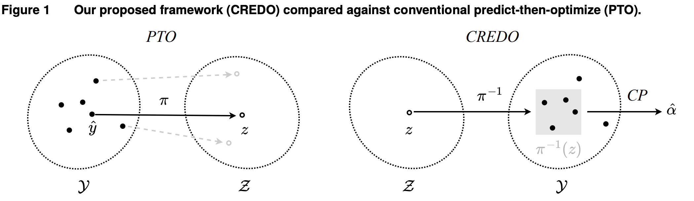
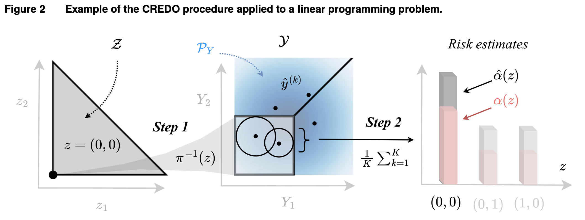

1
Map the decision to an inverse feasible region
For a candidate decision \( z \), CREDO considers the set of uncertain outcomes under which \( z \) would be near-optimal. This region is written as \( \pi^{-1}(z) \).
Academic project website
Conformalized Risk Estimation for Decision Optimization
A decision-risk assessment framework for evaluating whether prescribed human or algorithmic decisions remain near-optimal under uncertainty.
Motivation
Traditional predict-then-optimize pipelines often convert data into a single predicted outcome and then solve an optimization problem to produce or justify one decision. That workflow is useful, but it can leave an important question unanswered: how dependable is the prescribed decision when the uncertain outcome differs from the prediction?
CREDO focuses on decision-risk assessment for a prescribed decision. Instead of only asking which decision an optimizer returns, it evaluates whether a human or algorithmic decision remains near-optimal across plausible realizations of the uncertain outcome.

Figure 1 contrasts conventional predict-then-optimize with CREDO's decision-risk assessment perspective: instead of only outputting a decision, CREDO evaluates the risk of a prescribed decision.
Core Question
Near-optimal: membership in \( \pi(Y) \), meaning optimal up to a user-specified tolerance for realized outcome \( Y \).
Decision risk: the probability \( P\{ z \notin \pi(Y) \} \) that a prescribed decision \( z \) is not near-optimal under the realized uncertainty.
Distribution-free: the conformal guarantee does not require specifying the full data distribution, under the paper's assumptions.
CREDO Framework
For a candidate decision \( z \), CREDO considers the set of uncertain outcomes under which \( z \) would be near-optimal. This region is written as \( \pi^{-1}(z) \).
Generative conformal prediction is used to assess whether sufficient probability mass lies inside the inverse feasible region. Under exchangeability and the paper's assumptions, conformal calibration provides finite-sample coverage guarantees for auditing the prescribed decision.

Figure 2 illustrates the two-step CREDO procedure: mapping a candidate decision to its inverse feasible region, then assessing decision risk using generative conformal prediction.
Why Generative Conformal Prediction?
A single point prediction can be too narrow a basis for assessing the risk of a decision \( z \). By working with multiple generated samples, CREDO can assess whether sufficient probability mass is associated with the inverse feasible region \( \pi^{-1}(z) \) and avoid relying solely on one predicted outcome. The goal is a conservative risk assessment, while conformal calibration provides finite-sample coverage guarantees under exchangeability.
Results
CREDO is designed to estimate decision risk for prescribed decisions under uncertainty, with conformal calibration used to support conservative coverage statements.
The estimated risk can help compare candidate human or algorithmic decisions when reliability is part of the audit or evaluation question.
The paper evaluates modular framework components across several optimization settings, including how design choices affect the resulting risk estimates.
Interactive 2D CREDO Demo
Explore the LP \( \min_{z \in \mathcal{Z}} \langle y, z \rangle \), where \( \mathcal{Z} \) is the triangle with vertices \( (0,0) \), \( (1,0) \), and \( (0,1) \). The shaded outcome-space region approximates \( \pi^{-1}_{\epsilon}(z) \), the outcomes for which the selected decision remains near-optimal.
Drag \( z \) inside \( \mathcal{Z} = \mathrm{conv}\{(0,0),(1,0),(0,1)\} \).
Samples are tested against \( \pi^{-1}_{\epsilon}(z) \).
Hover or click a generated sample to inspect its conformal-style inner ball.
Estimated probability that \( z \) is not near-optimal.
Lower risk means more generated outcomes keep the prescribed decision inside its inverse feasible region. The estimated risk shown above follows the selected demo risk mode. The approximate true risk is a hard 0/1 failure rate computed from a large simulated sample, and is shown only for intuition. The full CREDO framework is designed to provide conservative risk estimates under its assumptions.
This is a simplified educational implementation of the CREDO workflow for a 2D linear program. It illustrates inverse feasible regions, generated samples, conformal-style balls, and estimated decision risk. It does not claim to reproduce the full theoretical guarantees or experiments from the paper.
Planned extension
This planned section would provide a chatbot-style assistant that helps readers navigate the paper, clarify notation, and connect the CREDO framework to decision-risk assessment concepts.
Code
Repository link to be added after the project repository is confirmed.
Citation
@article{zhou2025credo,
title = {Conformalized Decision Risk Assessment},
author = {Zhou, Wenbin and Orfanoudaki, Agni and Zhu, Shixiang},
journal = {arXiv preprint arXiv:2505.13243},
year = {2025}
}